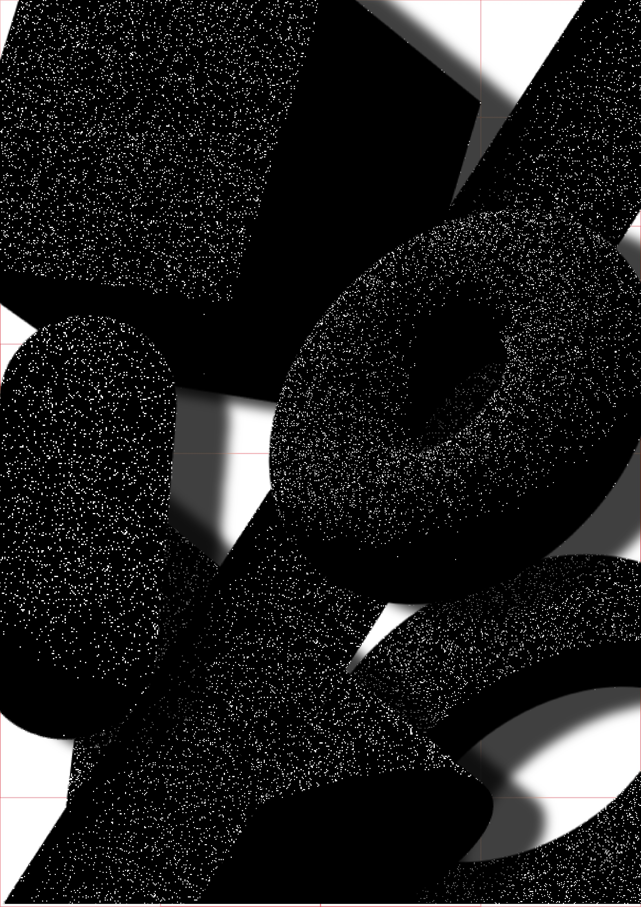

The calculus of communicating systems (CCS) is a process calculus introduced by Robin Milner around 1980 and the title of a book describing the calculus. Its actions model indivisible communications between exactly two participants. The formal language includes primitives for describing parallel composition, choice between actions and scope restriction. CCS is useful for evaluating the qualitative correctness of properties of a system such as deadlock or livelock

According to Milner, "There is nothing canonical about the choice of the basic combinators, even though they were chosen with great attention to economy. What characterises our calculus is not the exact choice of combinators, but rather the choice of interpretation and of mathematical framework". The expressions of the language are interpreted as a labelled transition system. Between these models, bisimilarity is used as a semantic equivalence.